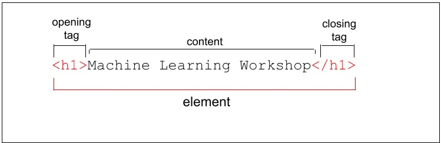
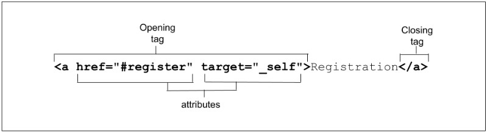

HyperText Markup Language, or HTML, is the standard markup language for describing the structure of documents displayed on the web. HTML consists of a series of elements and attributes which are used to mark up all the components of a document to structure it in a meaningful way.
Element
HTML is very, very forgiving. For example, if we omit the closing tags, the closing tags are implied.
ul
li Blendan Smooth
li Hoover Sukhdeep
li Toasty McToastface
/ul
Replaced and non-replaced Elements
Non-replaced elements
The paragraph, header, and lists marked up in the earlier section are all non-replaced. Non-replaced elements have opening and (sometimes optional) closing tags that surround them and may include text and other tags as sub-elements.
El navegador reenderiza directamente ese contenido
- div
- span
- p
- h1...h2
- a
- ul, li
- section, article
Replaced elements
Elementos html cuyo contenido no esta definido por html, sino que viene desde afuera, fuente externa como imagenes, videos, frames que reemplaza el contenido con algo que el elemento reenderiza.
Replaced elements are replaced by objects, be it a graphical user interface (UI) widget in the case of most form controls, or a raster or scalable image file in the case of most images.
Tags Examples
- img
- video
- audio
- iframe
- object
- embed
- input
Void element
Un void element (elemento vacío) es un elemento HTML que no tiene contenido y no necesita etiqueta de cierre.
input type="range"
img src="switch.svg" alt="light switch"
Void elements cannot contain text content or nested elements. Void elements include br, col, embed, hr, img, input, link, meta, source, track, and wbr, among others.
Atribute
Attributes provide information about the element.
Los atributos ayudaran a como tu contenido sera visible por motores de busqueda.
Note that if an attribute value is case-sensitive in HTML, it is case-sensitive when used as part of an attribute selector in CSS and in JavaScript.
Element, attributes and JS
The Document Object Model (DOM) is the data representation of the structure and content of the HTML document. As the browser parses HTML, it creates a JavaScript object for every element and section of text encountered. These objects are called nodes—element nodes and text nodes, respectively.There is an interface to define the functionality of every HTML element. The HTML DOM API provides access to and control of every HTML element via the DOM